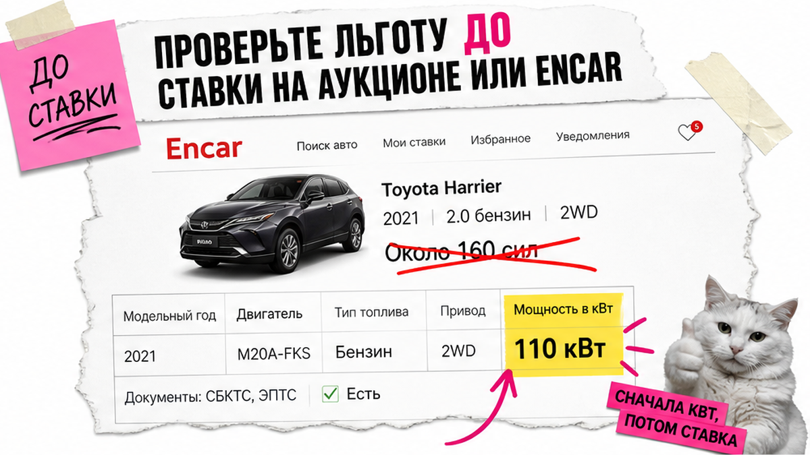
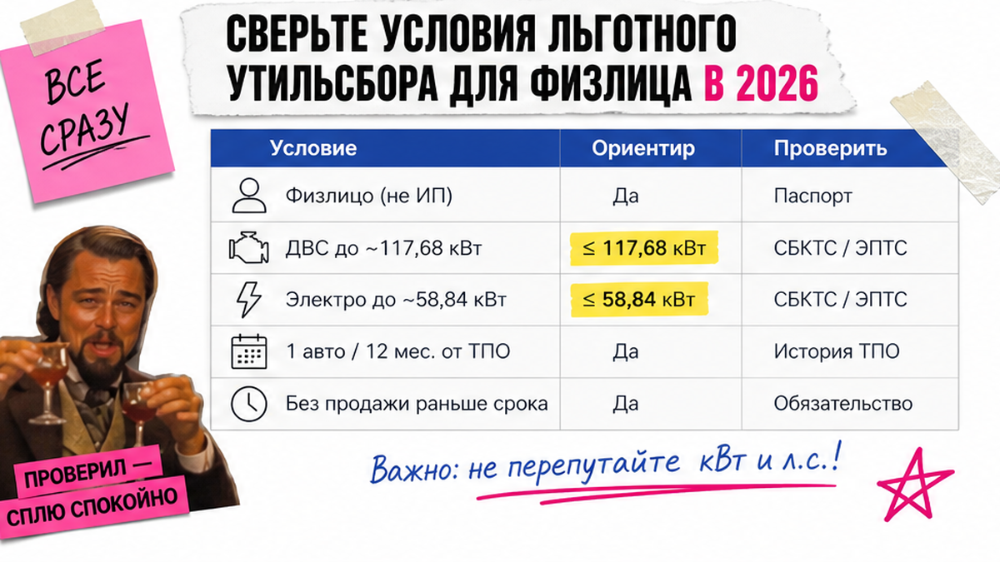
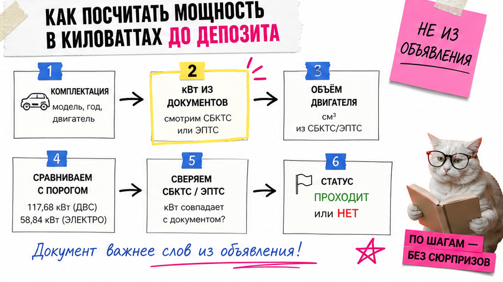

Хотите авто из Японии, Кореи или Китая "для себя" и слышали про льготный утильсбор за несколько тысяч, но не понимаете, пройдёт ли конкретная машина по мощности и правилу "одно авто". Типичный страх – узнать на таможне, что вместо льготы идут сотни тысяч, или получить доплату после ранней продажи. Ниже – чек-лист для физлица до ставки и депозита: кВт, пороги, срок от ТПО и план "да / нет / риск".
Коротко по делу: Льготный утильсбор в 2026 для физических лиц – пакет условий сразу: личное пользование, мощность и объём в норме, один льготный ввоз за период, регистрация на плательщика и без отчуждения раньше 12 месяцев. Порог в киловаттах: около 117,68 кВт ≈ 160 л.с.; для электро и последовательных гибридов – около 58,84 кВт ≈ 80 л.с. Страна вывоза льготу не даёт. Сначала чек-лист – потом ставка.
Правила обновлялись с 01.12.2025 (ПП РФ №1713 к базе №1291). Ориентиры 3 400 ₽ (до 3 лет) и 5 200 ₽ (старше 3 лет) работают только при реальном попадании в условия. Статья – не прайс: точную сумму уточняйте до депозита в каталоге.
Порог задан в киловаттах. В объявлении "ровно 160 л.с." ещё не гарантия: округление или пик вместо 30-минутной мощности легко уводят лот на коммерческую шкалу.

Например, Марина из Новосибирска выбрала на Encar "тот же" Kia Seltos, что у подруги: объём 1.6, в карточке "около 160 сил". Депозит почти отправила. Брокер показал: турбо-версия выше порога в кВт – льготы нет. Она поверила объявлению вместо киловатт из документов.
Одна модель из Азии часто идёт с разными моторами: атмо и турбо, гибрид и обычный ДВС. Объём 1.6 сам по себе льготу не подтверждает.
Делать: до ставки выписать модель, год, тип установки и мощность в кВт по комплектации. Не делать: слать депозит по фразе "у подруги так же прошло".
Схема до депозита:
Лот → Тип мотора → кВт и объём из документов → История "1 авто / 12 мес." → Статус "льгота да / нет / риск" → Ставка или депозит

Льгота – не скидка "за импорт из Азии". Это режим для физлица при личном пользовании, когда параметры машины и ваши действия после ввоза совпадают с правилами. Япония, Корея и Китай сами по себе льготу не включают и не отменяют.
| Условие | Ориентир | Проверить до оплаты |
|---|---|---|
| Кто ввозит | Физлицо, личное пользование | Машина на вас, не "под перепродажу сразу" |
| ДВС / параллельный гибрид | До ~160 л.с. (117,68 кВт), до 3000 см³ | кВт и объём по документам комплектации |
| Электро / последовательный гибрид | До ~80 л.с. (58,84 кВт), 30-минутная мощность | Не путать пик и 30-минутную мощность |
| Частота | Не чаще одного льготного ввоза за ~12 месяцев | Дата предыдущего ТПО, не "с 1 января" |
| После ввоза | Регистрация на плательщика; без отчуждения раньше 12 месяцев | План "держу год" или сразу коммерческий расчёт |
Делать: требовать все условия сразу. Не делать: надеяться, что "через ЕАЭС как раньше будет дешевле" – после реформы 1713 прежняя схема экономии для физлиц так не работает.

Тут важный момент: расчёту нужны киловатты, а не красивая цифра в объявлении. Грубо: 1 л.с. ≈ 0,7355 кВт. Порог ~160 л.с. – это 117,68 кВт. Если в бумагах 118 кВт, "почти 160" уже мимо.
Типичная ошибка – округлять "в свою пользу" или брать пик. На практике фиксируйте число из документа и уже по нему решайте.
Делать: считать от кВт. Не делать: ставить на лот, пока мощность не записана из документов.
Поэтому "слабый" на вид электро из Китая часто уходит на коммерческую шкалу. Это проверка до депозита, не сюрприз на таможне.
Делать: сначала тип гибрида, потом порог. Не делать: мерить все гибриды линейкой 160 л.с.
В гайдах пишут "один авто в календарный год". Ближе к практике: не чаще одного льготного ввоза за ~12 месяцев с даты предыдущего ТПО. ТПО – таможенный приходный ордер (документ об уплате); от него часто отсчитывают и запрет отчуждения.
Если планировали быстро перепродать "чтобы отбить", заложите риск доплаты при продаже или дарении раньше 12 месяцев, иногда с пенями. Машину обычно регистрируют на того, кто платил сбор.
Делать: внести в календарь дату ТПО и дату "можно следующий / можно продавать". Не делать: ждать 1 января как кнопку сброса счётчика.
Нужен разбор комплектации до ставки – откройте каталог avto-sales125.ru и уточните расчёт. Форм на странице нет: цифры живут в каталоге и переписке.
Сведите ответ в три статуса: льгота да, льгота нет, риск / серая зона. Пока статуса нет – депозит не отправляете.
Критерий результата: заполнен чек-лист из 6–8 пунктов; мощность сверена по кВт в документах, не по объявлению; ясно, можно ли рассчитывать на льготу; есть план B (другая комплектация / коммерческий расчёт / консультация); ставка "вслепую" исключена.
Делать: платить депозит только после "льгота да" или осознанного "льгота нет + коммерческий расчёт". Не делать: надеяться, что "на таможне как-нибудь пройдёт".
В реальном проекте заказа сначала запрашивают основание. Если уже коммерческая шкала или пришло требование о доплате:
Разбор документов по лоту – в Telegram @avtosales125. Подбор под льготный утильсбор – через каталог Авто-Сейлс: платежи считают до депозита.
Делать: сначала факты (VIN, кВт, ТПО). Не делать: гасить требование без сверки.
Материал проверен: Редакция Авто-Сейлс – эксперты по авто под заказ из Японии, Кореи и Китая.
Достоверность данных: пороги и условия сверены с официальной публикацией ПП РФ №1713 (к №1291), разъяснениями для граждан на Госуслугах/прокуратуре, практикой ввоза из Азии (GlobaMart, Nohara Auto, White Broker, Drom News); research-прогон 2026-10-01. Персональный расчёт – в каталоге.
При выполнении условий ориентиры часто называют 3 400 ₽ (до 3 лет) и 5 200 ₽ (старше 3 лет). Сначала подтвердите мощность, объём и правило "одного авто", затем берите точный расчёт в каталоге.
Да. Страна вывоза сама по себе не мешает и не помогает. Важны статус физлица, параметры машины и сроки после ввоза. Проверьте кВт комплектации до депозита.
Риск перерасчёта и доплаты, иногда с пенями. Отсчёт чаще от даты ТПО. Если продажа раньше года вероятна – сразу считайте коммерческий сценарий.
Смотрите максимальную 30-минутную мощность: ориентир около 80 л.с. (58,84 кВт). Многие электро из Азии выше порога – фиксируйте кВт до оплаты.
ДВС и параллельные гибриды – примерно до 160 л.с. (117,68 кВт) и до 3000 см³. Электро и последовательные гибриды – около 80 л.с. по 30-минутной мощности. Сверяйте киловатты в документах.
У отдельных категорий могут быть свои основания. Не смешивайте их с базовым пакетом "физлицо + мощность + 1 авто". Перечень бумаг уточните у брокера или в каталоге до заказа.